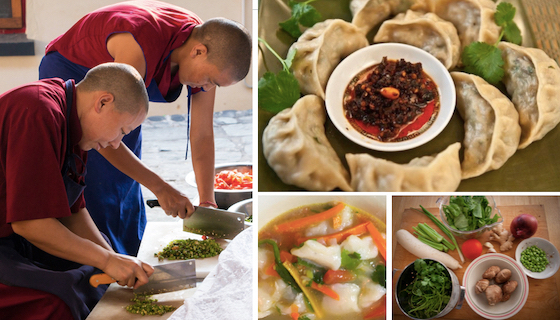

Story Of MOMO
The MOMO is a traditional Tibetan dumpling that has been a staple of Himalayan cuisine for centuries. The word "MOMO" is believed to have originated from the Tibetan word "mog mog," which simply means "steamed bread." These delicious dumplings are thought to have been introduced to Tibet through ancient trade routes, particularly from Nepal and China.
Cultural Significance In Tibetan culture, MOMOs are more than just food—they are a symbol of togetherness and celebration. Families often gather to make MOMO during festivals, special occasions, and the Tibetan New Year (Losar). The process of making MOOs is a communal activity where multiple generations come together, sharing stories and traditions while preparing this beloved dish. The act of making MOMO together strengthens family bonds and passes down culinary traditions from one generation to the next. It is common for grandmothers to teach their grandchildren the art of folding the perfect MOMO, a skill that takes patience and practice to master.
Click here for more of Momo’s story.